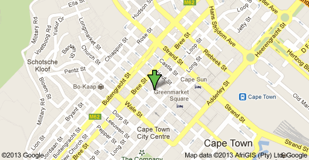

The Pet Collective was established in 2006. Our intention and mission is to supply good quality pet products at a reasonable price. Nicol Vojacek, founder of The Pet Collective, studied Animal Sciences and has a passion for cats. She has raised various pets throughout her life and has an admirable inside view of living with pets. Manuals on her experience can be found in the various pet categories.
We're dedicated to selling the best range of goods that will make life comfortable and pleasant for your little monster. We select the range of brands and goods to sell based on usability, appearance and review.
Find us at 28 Bree Street Cape Town, South Africa
